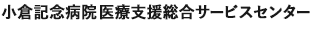

セカンドオピニオン外来
Second Opinionセカンドオピニオンとは？
小倉記念病院では、他の医療機関で受診されている患者さんを対象に、セカンドオピニオン外来を開設しております。セカンドオピニオン外来では現在の患者さんが受けられている診療内容や治療法に関しまして、当院専門医の判断・意見を提供し、患者さん自身の治療に参考にしていただくものです。セカンドオピニオン外来では相談のみを扱い、診療行為（検査・投薬・治療など）は行いません。当院での検査や治療をご希望の場合は、セカンドオピニオン外来の対象とはなりませんので、当院で治療を希望する旨を書かれた紹介状をお持ちになって、一般外来を受診してください。
セカンドオピニオンの対象となる方
肺がん・胃がん・肝がん・大腸がん・乳がん等のがん疾患、および各診療科の疾患を対象とする。
相談費用
- ●30分まで11,000円（消費税込）
- ●30分を超えて60分まで22,000円（消費税込）
相談者1回の相談時間は60分が限度となります。ご相談終了後に会計窓口（2階4番窓口）に会計票を提出しお支払いください。※セカンドオピニオン外来は自由診療で行なわれますので、健康保険は使えません。※相談時間には主治医への報告書作成に要する時間を含みます。
セカンドオピニオンの対象とならない方
・転院または転医の希望に関する相談
・相談内容が当院の専門外のものである場合
・診療情報提供書及び検査資料を持参できない場合
・主治医が了解していない場合
・治療結果や医師の技量等の評価に関する相談
・医療事故や訴訟に関する相談
・医療費の内容や医療給付に関する相談
・死亡した患者を対象とする相談
その他：相談内容が当院では困難と認めた場合
予約申し込み方法

お問い合わせ・ご予約
はじめに、お電話にてお問い合わせください。


受付時間：午前9時〜12時

診療情報の依頼と受取
現在おかかりの主治医に、「セカンドオピニオン外来あて診療情報提供書」の作成を依頼し、「セカンドオピニオン外来あて診療情報提供書」と必要な検査データ等の資料をお受け取りください。

診療情報提供書

お申し込み
主治医より受け取った「セカンドオピニオン外来あて診療情報提供書」と資料と「セカンドオピニオン外来申込書」「セカンドオピニオン外来相談同意書」（ご家族の場合）に必要事項をご記入し、がん相談支援センター宛にご郵送ください。

日程調整・相談日時の通知
診療科と検討し、担当医と日時を調整し、担当より患者ご本人、またはご家族に相談日時をご連絡いたします。ただし内容によってはご希望に添えないこともございますので、ご了承ください。
※また必要に応じて続柄を確認できる書類（運転免許証、健康保険証等）を確認させていただきます。相談者の人数は患者さんご本人を含めて3人以内となります。

セカンドオピニオンの相談実施
セカンドオピニオン当日は、予約時間の15分前までにがん相談支援センター（2階正面玄関入って左）にて手続きを行なってください。終了後、会計をお願いいたします。

主治医への報告
セカンドオピニオンの際に患者さんにお話しした内容は、当院担当医より現在おかかりの主治医にも、後日ご報告させていただきます。